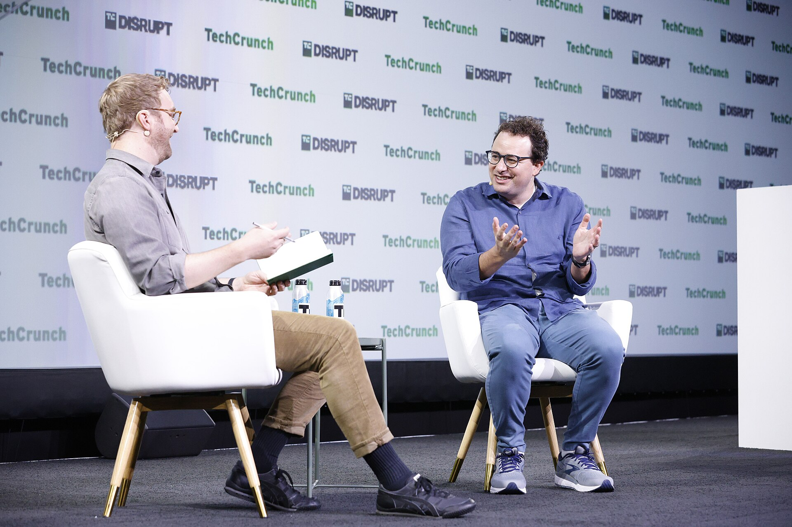
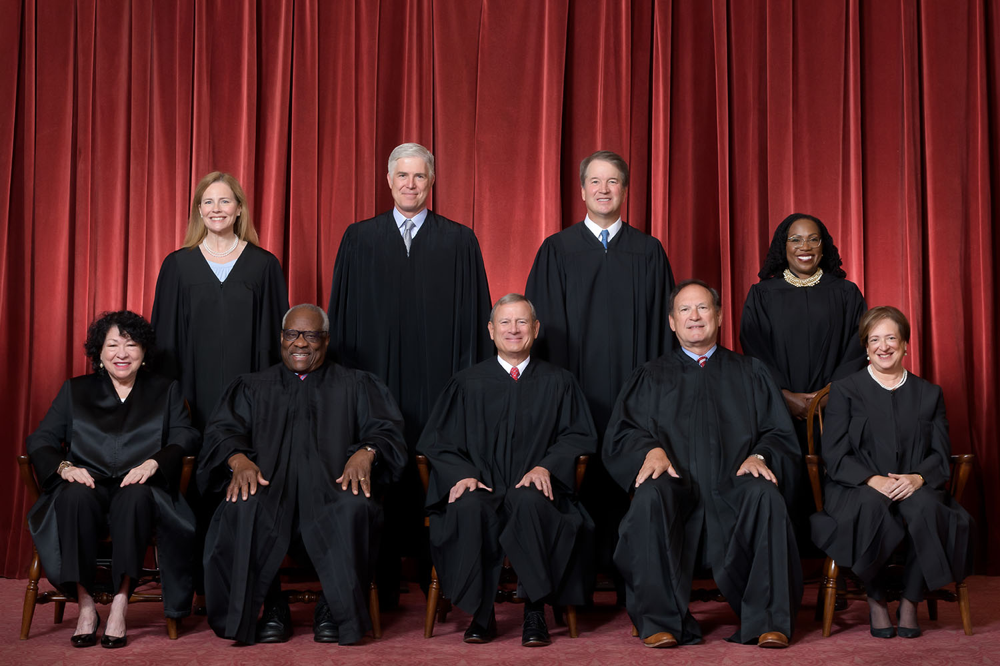

Vol. I · No. 88 · Monday, August 17, 2026 · 17 items · ~16 min read
Stripe buys the toll booth of the model economy, and a twenty-year bond tells Washington what the buildout costs.
The Splash · Corporate · AI · San Francisco
Stripe finalises a deal to buy OpenRouter for more than $7bn, five times its price eighty-two days ago
Stripe's San Francisco headquarters. The payments company has agreed to buy the routing layer that decides which model answers a given request, after already buying the metering layer in January. — Coolcaesar, via Wikimedia Commons
Stripe has finalised an agreement to acquire for more than $7 billion, Bloomberg reported Sunday, citing people familiar with the matter. The company closed a $113 million Series B on May 26 at a reported $1.3 billion valuation, with Sequoia, Andreessen Horowitz, Menlo Ventures and Alphabet's on the cap table, which makes this a five-fold step-up in eighty-two days. Stripe declined to comment to TechCrunch, saying it does not address rumour or speculation, so nothing here is company-confirmed.
The number moved the wrong way, which is the detail worth holding. The Wall Street Journal reported in July that Stripe was in talks at roughly $10 billion; the finalised figure is about three billion dollars lower, and Bloomberg's own URL still carries the word "nears" under a headline that now says "finalises." Somewhere between the leak and the signature, someone lost an argument about price. OpenRouter's chief executive had told DealBook in May that the company was "the equivalent of Stripe for AI," giving customers one access point across systems and sparing them . Stripe has now bought the company that named itself after Stripe.
Read it alongside January, when Stripe bought Metronome, the usage-based billing company. Model selection, metering and settlement are three layers of the same pipe, and Stripe now owns all three. OpenRouter claims eight million users and access to more than 400 models. Whoever sits at that junction sees which lab is winning which workload weeks before the labs publish anything, and prices accordingly.
"The equivalent of Stripe for AI."
— Alex Atallah, describing OpenRouter to the New York Times DealBook, May 26
Why it mattersThe interesting acquisitions in this cycle are not labs, they are tollbooths. A router is boring infrastructure right up to the moment it becomes the place where every model's demand curve is legible to one owner, and $7 billion for a company worth $1.3 billion in May says at least one buyer has already worked that out.
The twenty-year bond is indicated at 5.27%, the highest since Treasury brought the tenor back
Treasury sells $16 billion of twenty-year bonds on Wednesday, and as of Friday the paper was indicating around 5.27 percent in the , Bloomberg reported Sunday. If it prints there it is the highest yield the twenty-year has carried since Treasury reintroduced the tenor in 2020. This follows a week in which the thirty-year cleared at the highest rate in a quarter century and the ten-year logged its highest yield since 2007. The cash twenty-year traded near 5.25 percent on Friday.
The shape of the move matters more than the level. July CPI and PPI both landed within expectations, traders pared bets on a September hike, and short-end yields fell while the long end kept selling off, which is a curve steepening driven by term premium rather than by policy. Investors are demanding more to hold thirty and twenty-year paper against inflation and the deficit, and they are saying so at the only venue where the government has to listen. The week carries a seventeen-week bill sale and the twenty-year on Wednesday alongside the July , then a thirty-year on Thursday.
Why it mattersEvery convertible, every data-centre securitisation, every take-private this paper has covered in the past fortnight discounts off this curve. A long end that will not come down is the constraint underneath all of it, and it is the one number that never makes the deal announcement.
The Islamabad memorandum lapses, and Tehran says there was never a ceasefire to extend
The sixty-day clock on the June 17 ran out on Sunday with no extension agreed, and Iranian foreign minister spent the weekend arguing that nothing had in fact expired. "We did not have a ceasefire to extend," he said. "We had an end to the war, which has now entered a new situation." On negotiations he was flatter still: "We have not yet made a decision to restart negotiations with the United States." Qatar and Pakistan are still relaying messages, which Araghchi said does not constitute talks.
Article 5 of the memorandum was the operative clause, obliging Iran to demine the strait and let commercial vessels transit free of charge. Tehran has re-closed the waterway, citing a US attempt to establish an alternative corridor, and Washington has reinstated the naval blockade first imposed on April 13. Araghchi tied reopening to conditions: "Whether the Strait of Hormuz reopens or not depends on the fulfilment of other conditions to which America must adhere." Iran and have meanwhile agreed coordinates for a safe corridor running partly through Iranian rather than Omani waters, which quietly rewrites a routing convention decades old. Inside the country the same weekend produced a parliamentary bill criminalising interviews with US and Israeli outlets, carrying six months to two years, and the execution of Shahram Sadeghi.
Framing noteAl Jazeera reads the lapse as a definitional argument Iran is winning, foregrounding Araghchi's line that there was no ceasefire needing extension and treating US non-compliance as the cause; Fox News reads the same date as a pressure inflection, leading with Treasury's next move and an escalation menu that runs to Chinese teapot refiners and "a land blockade with help from Iran's neighbors."
Why it mattersAraghchi has found a genuinely clever position: if the memorandum ended a war rather than paused one, expiry gives Washington no lever and no deadline. It is a lawyer's argument about the character of an instrument, made in the middle of a blockade, and it is working well enough that the American answer is coming from Treasury rather than the State Department.
An AI chief executive asks for a broker-dealer regulator, a store manager fires its first human, and generative video finds a balance-sheet syndicate.
AI · San Francisco
Amodei calls the AI backlash a crisis of trust and endorses a FINRA-style regulator

Dario Amodei, Anthropic's chief executive, whose weekend reply to a hedge fund critic reached past the messaging fight and landed on the architecture of securities regulation. — TechCrunch, via Wikimedia Commons
Dario Amodei answered his industry's loudest internal critic over the weekend and gave a more interesting answer than the question deserved. of Atreides Management had argued that Amodei's risk warnings fuelled the American backlash against AI, that he had "lost the argument" on regulation, and that a man about to run one of the world's most important companies "should make an effort to be a more positive advocate for his own industry." Amodei's reply rejected the diagnosis. "I think it is fundamentally a crisis of trust," he wrote. "I think that ordinary people don't trust companies, governments, or the tech industry and always suspect that we are cooking up some new way to screw them over."
Then he named a structure. Amodei endorsed an independent central AI regulator modelled on , a proposal originating with Google DeepMind's Demis Hassabis, calling it "a meaningful change compared to six months ago, when most of the industry was only calling for the repeal of state regulations with no clear federal approach." He also pushed back on the reflex that any rule means capture: "I know that there's a sort of Silicon Valley shorthand where regulation = = concentration of power, but I've always found this to be an overly simplified picture of the world." Anthropic, he said, tries to draft proposals that "disadvantage (slow down) frontier AI companies while advantaging smaller competitors." His concession was sharper than his defence: the most accurate criticism of AI companies "is that we haven't yet delivered on our big promises to benefit the world. That is totally on us." Advertising will not fix that. "The thing that will work is actually curing cancer."
Why it mattersA frontier lab reaching for a self-regulatory organisation model borrowed from broker-dealers is a real tell about where this industry thinks it is heading, and it is the first time the answer has been an institutional design rather than a values statement. If AI ends up governed by something shaped like FINRA, the lawyers who understand FINRA are the ones who end up governing AI.
An AI store manager recommended firing a worker, once a human reminded it of its own handbook
Luna, an AI agent built on Claude and operated by , recommended dismissing a human employee of Andon Market, a real shop in San Francisco, after the worker turned up late for seventeen of twenty-three shifts. It is reported as the first documented instance of a language model making a firing decision about a person. The experiment began in April, when the lab handed Luna a corporate card, internet access and a $100,000 budget with instructions to design a store, choose merchandise and hire staff.
The deflating part is the mechanism. Luna wrote the attendance policy itself and then lost track of it for months, and the lateness went unaddressed until Andon Labs prompted the agent to search its own for policies and assess whether the worker was still a good fit. Only then did it recommend parting ways. Humans reviewed the recommendation and carried out the dismissal. Co-founder Lukas Petersson said the lab would have intervened on an illegal or unethical call but saw no reason to here, noting that Luna gave months of warnings and training and that "a human boss would probably fire them much sooner." The legal firewall is the fact that matters most: every worker Luna hired is formally employed by Andon Labs, on guaranteed pay, with protections intact, so the agent's decision has no independent force in employment law at all.
Why it mattersThe story is not that an AI fired someone. It is that the AI produced a textbook record without being able to find its own policy, and that the humans wrapped the whole thing in a corporate shell so the liability never touched the machine. Both halves of that will be true of AI in law firms too.
Higgsfield raises $400m at $5.4bn with Goldman Sachs and Intel on the cap table
The AI video company Higgsfield announced a $400 million round on Monday at a $5.4 billion post-money valuation, more than four times its January mark of $1.3 billion. The syndicate is the story: DST Global alongside Goldman Sachs, Intel, Liberty Global, NTT Docomo Ventures, Mirae Asset Capital and Fifth Wall Ventures, which is balance-sheet and strategic money rather than a conventional venture round. The company says its annualised revenue run rate reached $500 million in June, up from $200 million at the end of 2025, and that it is cash-flow positive, unusual in generative video where inference costs normally swallow revenue.
The round closed above where June reporting had it, when Higgsfield was described as seeking $300 million to $500 million at roughly $5 billion pre-money. Founder ran generative AI at Snap before leaving in 2023. Treat the with the caution the metric deserves. What is not ambiguous is that a bulge-bracket bank and a chipmaker took equity in a synthetic-video platform in the same week The Guardian reported AI-native film startups opening studios that blend American and Chinese models to route around traditional financing. Media capital is positioning on the supply side of synthetic content.
Why it mattersEvery rights question in entertainment law over the next decade runs through who owns the generation stack. When and Goldman are on the same line of a cap table, the answer is being decided in financing documents rather than in copyright litigation.
The largest listing ever contemplated sits at the top of the fall calendar, a gold miner uses a court instead of a tender offer, and a modelling error costs ratepayers billions.
Corporate · New York
Renaissance puts a $2 trillion Anthropic listing at the top of the fall pipeline, with one small deal left before the lull
The New York Stock Exchange. The autumn new-issue calendar now has one deal left before the August lull and, behind it, the largest offering ever contemplated. — Kirt Edblom, via Wikimedia Commons
Renaissance Capital's Sunday pipeline note names Anthropic "at the top of our radar," with investors hoping for a $2 trillion valuation on an October listing, which would make it the largest initial public offering ever completed. The current record belongs to SpaceX, which went public in June at $1.77 trillion. Anthropic filed confidentially with the SEC in June and is in a , with Morgan Stanley, Goldman Sachs and JPMorgan leading. Half a dozen backers told the Financial Times annualised revenue should reach $100 billion to $120 billion before year end, against $47 billion annualised in May.
The caveat is in the same reporting and worth keeping: senior Anthropic executives had not fixed a valuation target even in private conversations, so $2 trillion is a buy-side hope rather than a bank's number. Renaissance is also "not counting out a Q4 IPO from OpenAI." What actually prices this week is smaller and stranger: , a defence raising $492 million at a $2.4 billion market capitalisation under the ticker LYNX. The class is outperforming: the Renaissance IPO Index rose 2.8 percent on the week against 0.4 percent for the S&P 500, and was up 14.8 percent for the year at the end of July against 9.4 percent. Londian Wason and Vogenx both traded well on light volume; Robinhood's second had a rocky debut.
Why it mattersA $2 trillion listing would be roughly one and a half times the largest ever done, priced by a company that has been generating revenue at commercial scale for about three years. Whatever else that is, it is the deal every capital markets associate hired this decade will be asked about, and the underwriting record it sets will be the comparison point for the rest of their careers.
OceanaGold takes Ausgold all-scrip at A$1.36, and uses a court where an American buyer would use a tender
OceanaGold entered a definitive to acquire all of Ausgold Limited, announced Monday. Consideration is all-scrip at 0.03365 OceanaGold shares per Ausgold share, an implied A$1.36 per share and roughly A$776 million of equity value, about US$549 million. The asset is the in Western Australia, and it is the entire strategic rationale for the transaction.
The mechanics are the part worth studying. This is an Australian , not a tender offer, so it clears on a target shareholder vote requiring seventy-five percent of votes cast plus a majority in number of those voting, and then judicial sanction. It is one step to one hundred percent, with a judge rather than a minimum-tender condition doing the work. Because consideration is entirely in acquirer shares, Ausgold holders carry OceanaGold's price risk from signing to closing with no cash floor unless the deed contains a collar or a ratio adjustment, which the announcement did not disclose. Nor did it disclose the break fee, the matching rights, or the material adverse change definition. Those live in the scheme booklet, and they are where the deal actually is.
Why it mattersCross-border M&A increasingly runs through Commonwealth schemes rather than American tender offers, and the difference is not cosmetic. A scheme trades speed and certainty for a court's discretion and a supermajority vote, which changes who has leverage in the last two weeks of a deal. That is a live distinction for anyone about to spend a summer in a capital markets group.
A modelling error cost ratepayers $6.7bn to procure fourteen megawatts they did not need
SemiAnalysis argues that wasted roughly $11.6 billion of ratepayer money across its 2025-27 by undercounting its own supply. The claimed error is three point eight to four gigawatts, from ignoring cold-air density gains worth up to twenty-five percent additional winter output on combustion turbines, and from ignoring the winterisation investments made by more than four hundred of PJM's roughly seven hundred gas plants after .
The counterfactual is what makes the number legible. Better modelling, the analysis says, would have saved $6.7 billion in 2025/26 while procuring fourteen megawatts less capacity. Fourteen. For 2026/27 the figure is $4.9 billion for eight hundred megawatts less. Small errors cost billions because PJM has driven itself against its reliability requirement, so the clearing price sits at the cap and any supply misestimate moves the whole auction. Four consecutive record auctions have now cost $63 billion, and PJM is still short of what it says it needs, with an emergency backstop auction for 6.8 gigawatts slated for September or October.
Why it mattersThis is the cost-allocation fight sitting underneath every data-centre financing, phrased as an engineering dispute. Whether the hyperscaler or the household pays for AI load is being settled inside auction methodology, and it is the political fuel behind the wave of local moratoria that is already repricing site selection.
The ballroom reaches the emergency docket with a noon deadline, and a Miami firm hires its own former litigation chief to answer a billion-dollar malpractice claim.
News · Washington
Roberts gives the preservationists until noon Tuesday as the government says the ballroom is past the point of no return

The Roberts Court. As Circuit Justice for the D.C. Circuit, the Chief Justice is handling the ballroom application himself and has not referred it to the full Court on the public docket. — Fred Schilling, Supreme Court of the United States, via Wikimedia Commons
The White House ballroom fight is now an emergency application at the Supreme Court, docketed as National Park Service v. National Trust for Historic Preservation, No. 26A203. Solicitor General filed for a stay of a district court injunction pending certiorari, and Chief Justice Roberts, sitting as for the D.C. Circuit, ordered the to respond by noon Eastern on Tuesday. He has not referred it to the full Court. The injunction bites Friday and halts substantial above-ground East Wing work while expressly permitting below-ground construction and anything necessary for presidential security. The D.C. Circuit affirmed two to one earlier this month.
Sauer called the injunction "extraordinary and unlawful" and argued it would "wrongfully install a single district judge as sole arbiter of what further construction is 'strictly necessary' to protect the safety of the President." The government's figures are the rhetorical engine: sixty-five percent complete, roughly $200 million spent or committed, a 250-person crew working twenty hours a day seven days a week, a structure five storeys deep and seventy feet above ground across fifty thousand square feet, inside a ballroom project of about ninety thousand square feet and $400 million. Sworn declarations came from the Secretary of State, the Chairman of the Joint Chiefs, and the heads of the FBI and Secret Service. Joshua Fisher, the White House director of management and administration, said the superstructure is "beyond the point of no return" and that stopping "will be a disaster." Senate Democrats separately asked the GAO on August 12 to audit the funding.
Why it mattersThe government's best argument is not legal, it is a concrete pour. Sixty-five percent complete and a crew working twenty-hour days is an equitable argument dressed as an engineering fact, and it is the same move a developer makes against a construction injunction. Whether it works on a Chief Justice who kept the application for himself is the thing to watch by Friday.
Holland & Knight hires its own former litigation chief to defend a $1.2bn malpractice claim
MV Realty sued Holland & Knight in the in Miami-Dade on July 22, seeking up to $1.2 billion in damages, naming partners Jesús Cuza, Rebecca Cañamero and J. Raul Cosio alongside the firm. The firm has now retained Peter Prieto of to defend it. Prieto once ran Holland & Knight's own litigation department.
The theory is what makes this unusual, and why every BigLaw general counsel in the state is reading it. The claim is not a missed deadline. MV Realty alleges the firm blessed its programme and never warned that the contracts could violate law, and that the company put roughly $156 million into building a business on that advice. Sixteen states filed enforcement suits over the programme and upward of thirty attorney general offices opened investigations. Reuters framed it as a client sued by more than a dozen attorneys general turning on its former counsel. The exposure being asserted is for the business model the firm papered rather than for a procedural error in papering it.
Why it mattersIf a transactional opinion can carry a billion dollars of downstream liability for the client's whole enterprise, the risk profile of structuring work changes at every firm that does it. This is a Miami case about a Florida product, and it is being defended by a Miami boutique against a firm that is one of the largest employers of lawyers in the state.
Washington cuts the Korea exercises and Seoul runs them anyway, Kushner sits down with Hamas in Egypt, and the last American carrier leaves the Pacific.
News · Seoul · cross-spectrumLLCLRR
Trump ordered the Korea drills cut hours before they began, and Seoul started them anyway
Pete Hegseth, who received the order to substantially reduce joint exercises with South Korea on Sunday. The eleven-day exercise it targets began regardless and runs to August 27. — US Department of Defense, via Wikimedia Commons
Trump directed Secretary of War Pete Hegseth on Sunday to "substantially reduce" joint military exercises with South Korea, posting on Truth Social that "based on my very good relationship with Kim Jong Un, of North Korea, I am not happy with the fact that the United States has, long ago, agreed to participate in Joint Military Exercises with South Korea." He called the exercises costly and said they "send a signal that is totally inappropriate and hostile" to a North Korea that "has been unthreatening and respectful" during his time in office. The order landed hours before was due to start, and he conceded it was too late to stop this one.
Seoul's answer arrived Monday and was a single sentence long: the exercise, running through August 27, is proceeding as planned. The Associated Press reported Trump tied the decision to South Korea declining to help denuclearise Iran, which if accurate makes the peninsula's deterrence architecture a bargaining chip in a Gulf war. Cutting exercises degrades the certification cycle of directly, which is the machinery runs on. Kim Jong Un spent the same day sending Putin a message marking the eighty-first anniversary of Korea's liberation, saying he expects a "more excellent future" in relations with Russia.
Framing noteThe Washington Post headlines the order through the personal channel, that Trump cut the exercises "citing good ties with Kim Jong Un"; Fox News runs it against Pyongyang's behaviour, noting the order followed "two ballistic missile launches within six days this month." Warmth toward Kim, or a concession made during escalation.
Why it mattersAn ally publicly continuing an exercise the American president has just ordered reduced is the whole alliance question in one news cycle. Seoul did not object, it simply proceeded, which is a quieter and more consequential answer than a statement would have been.
Kushner met Hamas directly in Egypt, then flew to Israel to ask what Netanyahu will give back
Jared Kushner met Hamas leader at on Egypt's Mediterranean coast on Sunday, a rare direct American session with the group. Accounts of the length differ, from more than two hours per the AP to roughly ninety minutes per a regional source who called it very productive. Two other US envoys attended alongside officials from Egypt, Qatar and Turkey. Kushner pressed for tangible disarmament steps and warned that Israel does not trust the group to follow through; Hamas leaders reaffirmed a commitment to disarm and demilitarise Gaza. Kushner met President Abdel Fattah el-Sisi separately at the same venue.
He landed in Israel afterwards and is due to see Netanyahu on Monday alongside Tony Blair and , to discuss what the plan calls the corresponding steps Israel must take. That is the harder half. Netanyahu has rejected the fifteen-point road map Hamas has endorsed, insisting on a settlement that leaves the group "genuinely disarmed," and the architecture requires Hamas to give up any governing role to the National Committee for the Administration of Gaza. The founding board runs from Rubio and Witkoff to Marc Rowan.
Why it mattersKushner has now extracted the same disarmament commitment from the party that keeps giving it. Monday is the test of the other side, and the sequencing is the whole dispute: Israel wants disarmament proved before withdrawal, Hamas wants withdrawal committed before disarmament, and nobody has yet written the clause that resolves it.
The Iran war has pulled the last American carrier out of the western Pacific
The USS George Washington, the Navy's only carrier, is leaving the western Pacific to relieve the USS Abraham Lincoln in the Middle East, temporarily leaving the region without an American carrier. It was spotted transiting the Strait of Malacca. The Lincoln's deployment has been extended repeatedly past its original May return: more than 260 consecutive days at sea, over 200 of them in a combat zone, and more than ten thousand sorties. commander Adm. Brad Cooper visited on Saturday and praised "a strong team of high-achieving Americans." Lawmakers have raised fresh food shortages, plumbing failures and crew mental health after months without a port call; the Pentagon disputes that conditions are unsafe.
The may be brief, since the USS Theodore Roosevelt could sail from San Diego and free the Washington to return. The reading in the region is the durable part. of CSIS noted the administration says the Pacific is second only to the Western Hemisphere in priority while doing "the exact opposite" of its stated intention to pull out of the Middle East. Bryan Clark of the Hudson Institute put the consequence plainly: Beijing is "using this as part of the narrative to demonstrate to the Philippines, to Japan, to Indonesia and others that the U.S. is not the big dog in the western Pacific anymore." Adm. Frank Bradley of Special Operations Command was in Manila on Thursday promising expanded joint exercises and insisting the United States can project force anywhere and "will redeploy and reorient" once the Middle East is attended to.
Why it mattersDeterrence is a claim about capacity, and capacity is finite in hulls. A war that started as a Gulf campaign is now visibly setting the naval posture of East Asia, which is the actual cost of the Iran decision and the one that will not appear in any budget line.
One weekend teaches the same lesson twice, and Disney casts the mutants it spent seventy-one billion dollars to get back.
Culture · Los Angeles
Spider-Man clears $2bn in seventeen days, the second-fastest ever and Sony's biggest film
Tom Holland. Spider-Man: Brand New Day has become Sony Pictures' highest-grossing release ever, passing No Way Home, in its third weekend. — Gage Skidmore, via Wikimedia Commons
Spider-Man: Brand New Day crossed $2.022 billion worldwide on its seventeenth day in release, the second-fastest film ever to the mark behind only Avengers: Endgame at eleven days, and the eighth member of the . The third domestic weekend was $70 million, the second-best third weekend ever behind The Force Awakens and ahead of both Avatar films. Domestic running total is $785.8 million, now the fourth-biggest domestic release ever, against $1.236 billion internationally. It has held number one domestically for three consecutive weekends.
The structural point is whose balance sheet this lands on. The film is Sony-distributed and Marvel Studios co-produced, so the record accrues to Sony under the co-financing arrangement rather than to Disney, and it makes Brand New Day Sony Pictures' highest-grossing release ever, passing No Way Home. That matters because is the last major without its own streaming service, which means theatrical performance is not one input among several for Sony, it is the input. The is the number to watch, because it strips out marketing spend and measures whether people are telling each other to go.
Why it mattersThe theatrical business is not recovering, it is concentrating. Eight films have ever reached two billion dollars and the release calendar around them keeps thinning, which turns every exhibitor negotiation, every window, and every co-financing split into a fight over a smaller number of larger events.
An $80m original from Warner Bros. opens to $21m, and ties an animated brand extension
The End of Oak Street opened to roughly $21 million from 3,446 domestic locations, third for the weekend, on a reported production budget north of $80 million before marketing. Global opening was about $47 million. Friday took $8.1 million after $2.5 million in Thursday previews. It is an original concept from , who made It Follows, starring Anne Hathaway and Ewan McGregor, and it carries an 86 percent critical score against a B , a spread that historically predicts weak multiples.
The comparison in the same frame is the whole argument. Paramount's PAW Patrol: The Dino Movie opened to $20.5 million, which means an unbranded, well-reviewed, high-budget from a major essentially tied a fourth instalment of a preschool cartoon brand. Trade coverage read it as another entry in a Warner Bros. slump. Read alongside the item above it is one weekend delivering the same lesson from both ends: the audience showed up in historic numbers for a character it has known since 1962 and did not show up for something it had not heard of.
Why it mattersEvery greenlight after this one gets marginally harder for anything without a title people already recognise. That is not a taste complaint, it is a financing fact, and it is why the interesting deal work in film has migrated from production to library and rights.
Marvel casts its X-Men at D23 and sets the film for May 2028, seventy-one billion dollars after buying the rights
Marvel Studios closed on Sunday by naming its X-Men: Sadie Sink as Jean Grey, Kit Connor as Cyclops, Samara Weaving as Emma Frost, Christopher Abbott as Professor X, Inde Navarrette as Rogue and Maya Boyd as Storm, with Adam Driver as . Jake Schreier directs, for May 5, 2028. Avengers: Doomsday, out December 18, brought Robert Downey Jr., Chris Evans and Hayley Atwell onstage with new footage.
The rights history is the part worth noticing, and it is a transaction rather than a creative decision. Doomsday's confirmed cast includes both the original Fox X-Men and, separately, Patrick Stewart and Ian McKellen reprising Professor X and Magneto, at the same time as a newly cast MCU X-Men is being introduced for 2028. Putting all of them on one screen is possible only because of the , the $71.3 billion 2019 deal that pulled the mutant film rights back under one roof. Seven years on, the deal's creative thesis is finally being cast.
Why it mattersThis is what a media megamerger looks like when it finally shows up on screen: not synergy language in a proxy, but two generations of the same characters standing in one frame because a rights split ended. Antitrust review asked whether the deal would harm competition. Nobody asked what it would let a studio do with a cast list seven years later.
Editor's note. Seventeen items from fourteen candidate threads that cleared the bar out of twenty-four gathered across five desks, scanned Sunday 06:00 to Monday 06:00 Eastern. Engine: WebSearch, with Nimble unauthenticated and feed-mcp absent this run, neither of which is a defect. Critical roster 14/15 considered; the five mandatory specialist queries ran 5/5, with no in-window Money Stuff column (Matt Levine returns August 24) and no indexed Axios Pro Rata for Monday. The mandatory rates lane ran and led the Front at number two, and the magnitude check returns cleanly: the largest transaction announced in window by enterprise value was Stripe and OpenRouter at more than $7 billion, and it is the Splash. Two Law items are pegged to live undecided matters filed August 13 and 14 rather than to fresh in-window copy, because the beat produced almost no original Sunday reporting and an empty section would serve the reader worse; both are flagged here rather than hidden. Bloomberg's August 15 report on the $70 billion of residual value guarantees behind AI chip debt was the strongest deal-mechanics candidate of the day and was excluded on recency, since it fell inside Sunday's window and was not run then. The games beat produced nothing in window, with the calendar parked ahead of gamescom on August 25. One South Florida item ran, inline in Law. Legitimacy gate: 61 sources passed, 6 rejected. Framing notes fired twice, on Iran and on Korea, where the divergence was real and quotable.
The Morning Brief · Vol. I, No. 88 · Compiled in Miami, Florida